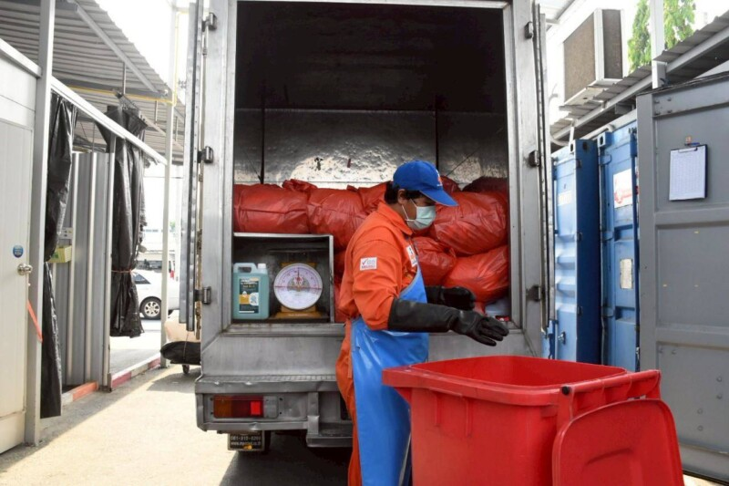
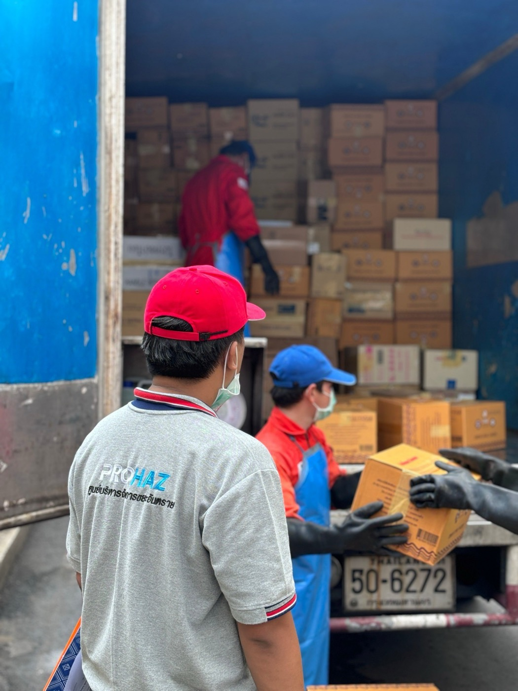
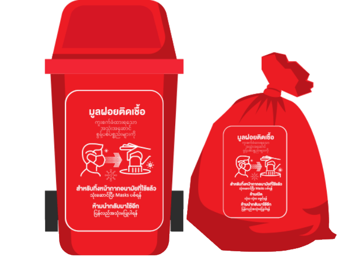
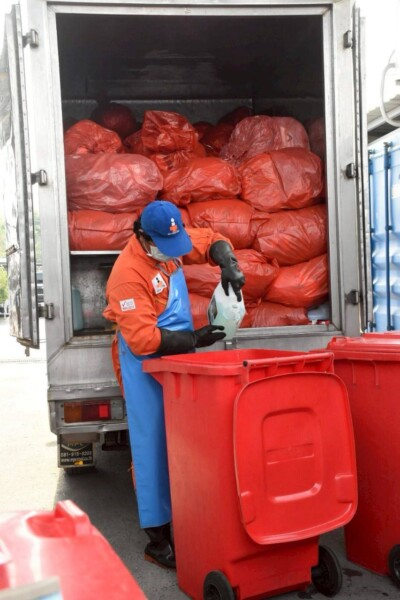
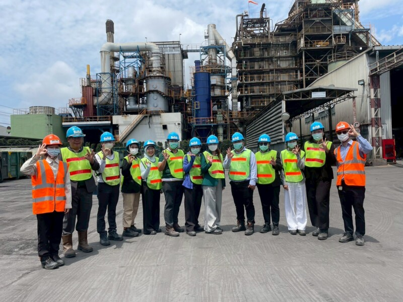
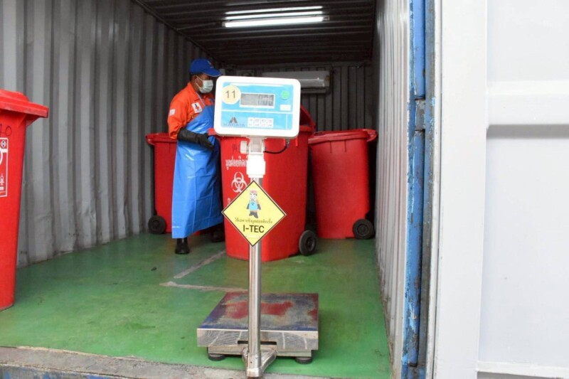
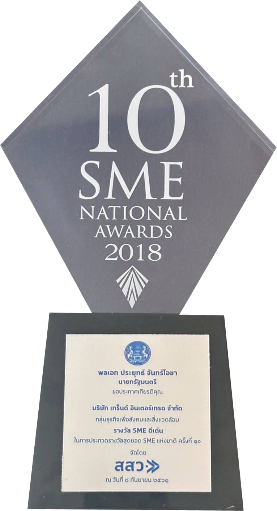
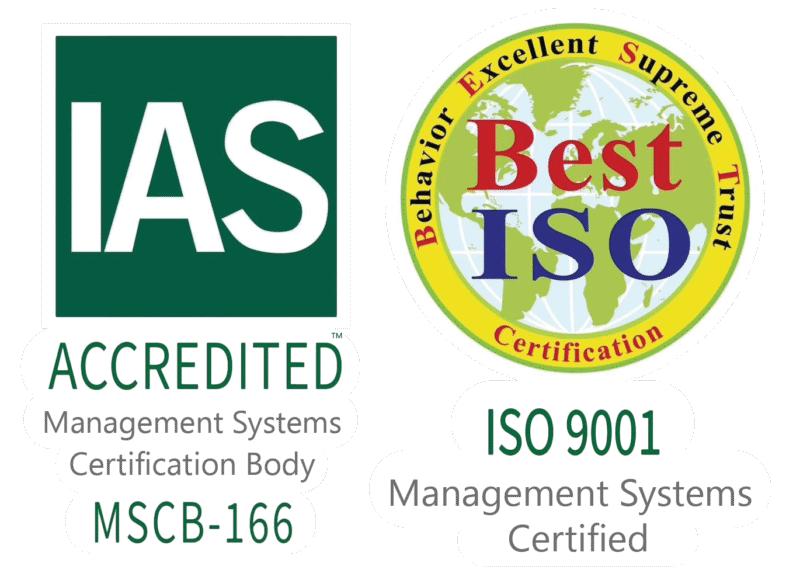
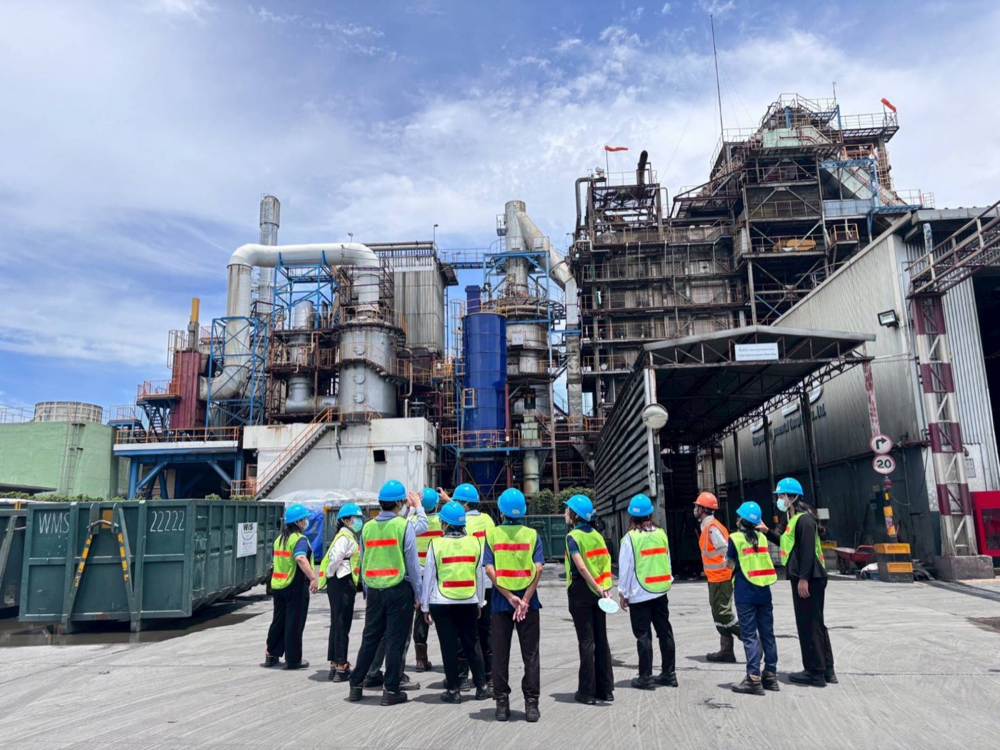

กำจัดขยะติดเชื้อ
เก็บขนด้วยรถควบคุมอุณหภูมิตามกฎหมาย และทำลายเชื้อด้วยเตาเผาอุณหภูมิสูงปลอดมลพิษ
- รถเก็บขนควบคุมอุณหภูมิ
- ติดตามรถด้วย GPS
- เอกสาร Manifest / E-Manifest

จัดเก็บ ขนส่ง และกำจัด ด้วยเตาเผาอุณหภูมิสูงปลอดมลพิษ ถูกต้องตามกฎกระทรวงว่าด้วยการจัดการมูลฝอยติดเชื้อ พ.ศ.2545 และมาตรฐาน ISO 9001:2015
ใบอนุญาต & รางวัล
ตั้งแต่ถังบรรจุ จนถึงการเผาทำลาย ทุกขั้นตอนมีเอกสารกำกับ ตรวจสอบย้อนกลับได้
เก็บขนด้วยรถควบคุมอุณหภูมิตามกฎหมาย และทำลายเชื้อด้วยเตาเผาอุณหภูมิสูงปลอดมลพิษ

จัดการของเสียอันตรายจากสถานพยาบาลและผู้ประกอบการ อย่างถูกต้องตามหลักวิชาการ
อบรมบุคลากรโรงพยาบาล เรื่องการคัดแยก การบรรจุ และการป้องกันการแพร่เชื้อ
บริการเก็บและกำจัดผ้าอนามัยจากผู้ประกอบการ อาคารสำนักงาน และห้างร้าน
ถังบรรจุมูลฝอยติดเชื้อ ถุงแดง และอุปกรณ์สำหรับการคัดแยกขยะ
ทำลายเอกสาร PDPA การเงิน และบัญชี อย่างปลอดภัย ไม่รั่วไหล

ทีมงานผ่านการฝึกอบรมการป้องกันและระงับการแพร่เชื้อจากมูลฝอยติดเชื้อ

ขยะติดเชื้อจากคลินิกถูกคัดแยกลงถังบรรจุมาตรฐาน พร้อมอบรมบุคลากรให้คัดแยกได้ถูกต้อง แล้วยกขึ้นรถ

รถเก็บขนควบคุมอุณหภูมิตามกฎหมาย ออกจากคลินิกสู่ศูนย์กำจัด ติดตามการเดินรถแบบเรียลไทม์ด้วย GPS

ถึงศูนย์กำจัด ขยะติดเชื้อเข้าเตาเผาอุณหภูมิสูงปลอดมลพิษ ตามกฎกระทรวงว่าด้วยการจัดการมูลฝอยติดเชื้อ พ.ศ.2545

กำกับการขนส่งด้วยเอกสาร Manifest และระบบ E-Manifest ตรวจสอบย้อนกลับได้ทุกขั้นตอน
เก็บขนมูลฝอยติดเชื้อรายแรกของประเทศไทย
รถควบคุมอุณหภูมิตามกฎหมาย ติดตามด้วย GPS กำกับด้วย Manifest / E-Manifest
ขึ้นทะเบียนผู้ประกอบการ SME เพื่อการจัดซื้อจัดจ้างภาครัฐ
การป้องกันและระงับการแพร่เชื้อ หรืออันตรายจากมูลฝอยติดเชื้อ
SME ดีเด่น 2018 — รางวัลจากนายกรัฐมนตรี กลุ่มธุรกิจเพื่อสังคมและสิ่งแวดล้อม · ISO 9001:2015 — ได้รับรองด้านงานบริการ


30 ภาพจากหน้างานจริง
การจัดการขยะติดเชื้อและขยะอันตรายทางการแพทย์ในประเทศไทยยังเป็นปัญหาที่ต้องจัดการอย่างต่อเนื่อง ปริมาณมูลฝอยติดเชื้อเพิ่มขึ้น และต้องทำลายเชื้อด้วยระบบเตาเผาอุณหภูมิสูงปลอดมลพิษ
ศูนย์ I-TEC บริหารจัดการจัดเก็บ ขนส่ง และกำจัด ถูกต้องตามหลักวิชาการและกฎกระทรวงว่าด้วยการจัดการมูลฝอยติดเชื้อ พ.ศ.2545 บริหารองค์กรอย่างเป็นระบบตาม ISO 9001:2015 ควบคุมความเสี่ยง และพัฒนาอย่างต่อเนื่อง

ปรึกษาฟรี ตอบกลับรวดเร็ว ให้บริการกรุงเทพฯ ปริมณฑล และจังหวัดใกล้เคียง
กดเลือกจังหวัด ระบบจะใส่ให้ในฟอร์มขอใบเสนอราคาด้านล่างอัตโนมัติ

สแกนเพื่อแอดไลน์
@itecwaste